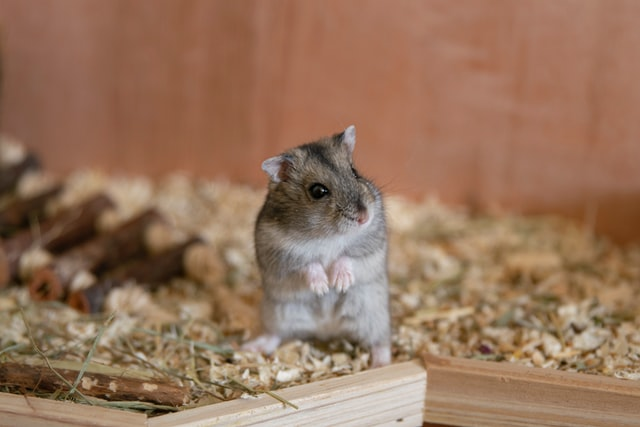

햄스터

주로 애완용으로 기르는 설치류 쥐과 동물. 쥐목 비단털쥐과 비단털쥐아과에 속한 포유류를 말한다.
종류
크게 시리아햄스터속과
드워프햄스터속으로 나뉜다.
비단털쥐아과 중에서도 애완용으로 기르는 종류를 주로 햄스터라고 부른다.
입양 전 주의사항

- 다른 반려동물을 기르고 싶은데 용품과 비용이 부담스러워서 햄스터를 선택한다면 아래의 내용을 읽어보고 다시 한 번 생각해볼 것.
햄스터는 최소 5000cm²의 면적이 필요하므로 집에 공간이 가로로 1m, 세로로 50cm는 필요하다.
최소한의 사육환경을 갖추려면 한마리당 초기비용만 30만원 이상 들어간다.
- 햄스터는 개나 고양이, 앵무새 등처럼 사람과 교감을 하는 동물이 아니므로 그런 부분을 원한다면 더더욱 기르지 않는 것이 좋다.
- 본인에게 알러지나 비염, 천식 등의 문제가 없는지 체크한다.
- 잠귀가 밝거나 예민하다면 키우지 않도록 한다.
- 어린 아이가 있는 집에서 키우기 부적합하다.
- 다른 반려동물과는 가급적 같은 공간을 사용하지 말아야 한다.
- 다른 반려동물과 마찬가지로 비상시 맡길 곳이 있는지, 주변에 전문 병원이 있는지 확인한다.
또, 혼자 사는 경우 시간을 내 간병 등을 할 수 있는지도 고려해야 한다.
- 추위, 더위 등의 조치를 적절히 취해줄 수 있는 지 고려한다.
- 햄스터는 야생에선 영역을 만들어서 생활하는 동물이기 때문에 좁은 케이지에 여러마리를 가둬 놓으면
스트레스 받아서 싸우다 카니발리즘이 난다. 그리고 다른 공간에서 키울 수 없다면
한번에 암컷, 수컷을 둘 다 들이는 일도 하지 말아야 한다.
- 햄스터는 인형이 아니다.